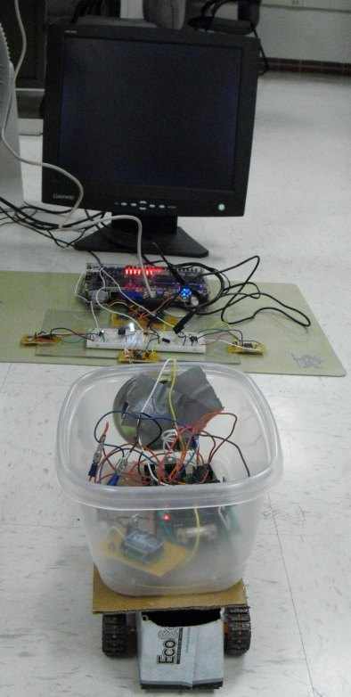

Introduction
The purpose of this project was to construct a sound localizing system on an FPGA that is able to detect, analyze, and control the location of an external roving sound source.

The main idea behind this project was to construct a system on the Altera DE2 board (Cyclone II FPGA) that is capable of detecting the location of a sound source. We envisioned many purposes for such an instrument in gaming and other types of systems; however, to demonstrate our sound localizing capability in this project, we decided to use it for robot control.
The result of this project is an AVR powered robot that is completely controlled by the hardware and software running on the Cyclone II FPGA. Wireless data transfer is used to send commands to the robot, which result in it moving to a new location or sending out a sound for the FPGA to interpret. The robot is also able to collect data about its surroundings, which the FPGA is again able to analyze.
The FPGA system must perform a great deal of math and control in order to ensure that it calculates a location with a reasonable margin of error for the robot while it is traveling throughout the room. Sound receiving circuitry, which is composed of three microphones, is interfaced to the system. The FPGA uses the sound receiving circuitry to maintain information about the position of the robot including the robot’s angle and x and y distance from the FPGA. Furthermore, the FPGA maintains information regarding the data the robot is collecting. It displays the collected data and robot location in various colors on a VGA monitor.
We chose this project due to our combined interests in robotic systems, microcontroller design, and apparent dislike of sleep. The amazing part of this project was its ability to combine external hardware, FPGA hardware, software, and a robot all into one system. Interfacing the systems added a degree of complexity to the project that was not initially expected; however, made the project interesting and fun to work on. The main reason for completing a project of this type was to create a system that could make a difference in future sound localizing or robotic system research.